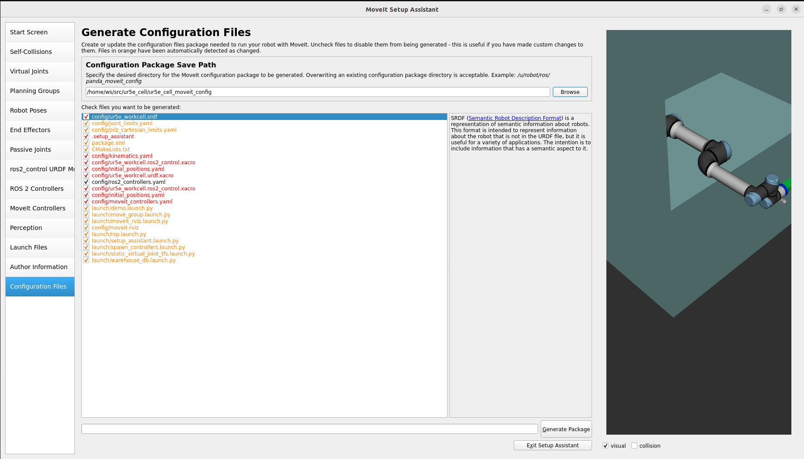

MOVEIT SETUP ASSISTANT
Contents
Introduction
Using a URDF file with the setup assistant
Introduction to the MoveIt! Setup Assistant
Configure your robot with the MoveIt! Setup Assistant
MoveIt! Usage
demo.launch
1. Introduction
This tutorial explains the basics of how to describe industrial robots in ROS and how to use the created kinematic models. You will learn about the Unified Robot Description Format (URDF). The tutorial will inform about how to create a robot model, how to visualize your robot and begin with easy planning for your model.
Lines beginning with $ are terminal commands
Lines beginning with # indicate the syntax of the commands
The symbol → represents a line break.
2. Using a URDF file with the setup assistant
A URDF file can be used from several ROS tools, e.g. as robot model in the Gazebo Simulation environment, as visualization element in rviz or as a kinematic model for MoveIt!.
MoveIt! is the most widely used Open Source software for motion planning, manipulation, 3D perception, kinematic, control and navigation.
It provides an easy-to-use platform for developing advanced robotics applications, evaluating new robot designs and building integrated robotics products.
Introduction to the MoveIt! Setup Assistant
The MoveIt! Setup Assistant is a powerful graphical tool to configure any robot you want to use with MoveIt!. The main task of the Setup Assistant consists in generating the Semantic Robot Description Format (SRDF), which is used in the ROS node move_group.
Check http://wiki.ros.org/srdf for further information. Besides the SRDF, there are a lot of other configuration files generated e.g. for joint limits, kinematics and motion planning. The only information the tool needs is the Unified Robot Description Format (URDF) of the robot, i.e. the file that you have created recently.
Configure your robot cell with the MoveIt Setup Assistant
To start the Setup Assistant you need the following command:
ros2 launch moveit_setup_assistant setup_assistant.launch.py
A graphical user interface comparable to figure 1 should appear.

Figure 1: MoveIt! Setup Assistant start screen
Select the Create New MoveIt! Configuration Package button and browse for the file called ur_demo_description.urdf.xacro in
~/moveit_ws/src/ur5e_cell/ur5e_cell_description/urdf/. This file includes the URDF file you edited in the URDF tutorial. Your window should look like shown in figure 2.Click on the Load Files button and after a few seconds the Setup Assistant will present you a model of the robot on the right side of the window.
Afterwards click on the Self Collision pane selector to generate a matrix for pair of links which are not necessary to be checked for collision every time at planning process. This is because they are either always in collision or never in collision.
Figure 2: Choose mode and select URDF
Change the Sampling Density to maximum possible
Select the Regenerate Default Collision Matrix button
After a few seconds the MoveIt! Setup Assistant will present you the results of the computation. Have a look at figure 3 for reference.
Figure 3: Results for the Default Collision Matrix
Skip the virtual joints pane as the workcell.xacro.urdf already contains a fixed link.
In the next step you will define your planning group for which MoveIt! later on tries to compute a path.
Click on the Planning Groups pane selector on the left
Click on Add Group at the bottom
Set the Group Name as “arm”
Choose
kdl_kinematics_plugin/KDLKinematicsPluginas the Kinematic solver.Choose RTTConnect as default planner.
Click on the Add Kin. Chain button and choose
base_linkas Base Link andtool_tipas Tip Link (see Figure 5.1).Select Joints and Edit Selected. Add joints
shoulder_pan_joint,shoulder_lift_joint,elbow_jointandwrist_[1-3]_joint(see Figure 5.2).Click “Save”. See the result in Figure 5 for reference.
Figure 5: Add Planning Group “arm”
Figure 5.1: Adding the kinematic chain to planning group arm
Figure 5.2: Adding the joints to planning group arm
Figure 5.3 Final planning group arm
Skip the End Effectors and Passive Joints pane selectors.
The Setup Assistant includes the option to add poses. It is helpful to define poses that will be used often in later developing process e.g. a home pose for the robot.
Select Robot Poses
Click the Add Pose button
Choose a name for the pose and move the joints to a position that you like
Save the Pose
Figure 7: Defining robot poses
Skip the
ros2_control URDF Modelpane as we use the ros2_control model provided by UR Robot Driver.Choose the ROS 2 Controllers pane on the left.
Auto add the controllers and then click on arm_controller and Edit selected (see Figure 10)
Change the name to
joint_trajectory_controllerand click save (Figure 10.1, Figure 10.2)
Figure 10: ROS2 controllers after auto adding
Figure 10.1: Modifying the ROS2 controllers
Figure 10.2: Correctly added and named ROS2 controllers
Choose the Moveit Controllers pane on the left
Auto add the controllers and then click on arm_controller and Edit selected (Figure 11)
Change the name to
joint_trajectory_controllerand click save (Figure 11.1, Figure 11.2)
Chose the Author information pane on the left and enter your name and e-mail adress
Click on Configuration Files, click Browse and select path till “src” inside your workspace and manually name the package “ur5e_demo_moveit_config” as shown in figure 6.
Click “Generate Package”
If the process completes successfully you can try out your newly created MoveIt! configuration as described in the next section

Figure 12: Configuration Files
3. Adding and adjusting configuration files
Sadly, Moveit Setup Assistant is not yet feature complete and the generated package does not contain all necessary and correct configuration files.
You need to setup correct initial positions for the robot. To do so copy the file provided under
workshop_resources/ur5e_moveit_config/config/initial_positions.yamlinto the config folder of your ur5e_cell_moveit_config package.Next you need to setup the correct joint limits. To do so copy the contents of
workshop_resources/ur5e_moveit_config/config/joint_limits.yamlinto your joint_limits.yamlThen we need to fix the ROS2 controllers configuration. The UR robot has many more controllers than the ones Moveit knows about. Therefore copy the contents `workshop_resources/ur5e_moveit_config/config/ros2_controllers.yaml`` into your ros2_controllers.yaml.
Finally we need to add the configuration for the ompl planner. To do so copy
workshop_resources/ur5e_moveit_config/config/ompl_planning.yamlto your config folder.The UR robot comes with a quite complex xacro file that needs many arguments which Moveit Setup Assistant does not know about. Replace the contents of ur5e_workcell.urdf.xacro with the following content.
<?xml version="1.0"?>
<robot xmlns:xacro="http://www.ros.org/wiki/xacro" name="ur5e_workcell">
<!-- <xacro:arg name="initial_positions_file" default="$(find ur5e_cell_moveit_config)/config/initial_positions.yaml"/> -->
<xacro:arg name="name" default="ur5e_workcell" />
<xacro:arg name="ur_type" default="ur5e" />
<xacro:arg name="prefix" default="" />
<xacro:arg name="script_filename" default="$(find ur_robot_driver)/resources/ros_control.urscript" />
<xacro:arg name="output_recipe_filename" default="$(find ur_robot_driver)/resources/rtde_output_recipe.txt" />
<xacro:arg name="input_recipe_filename" default="$(find ur_robot_driver)/resources/rtde_input_recipe.txt" />
<xacro:arg name="use_fake_hardware" default="true" />
<xacro:arg name="fake_sensor_commands" default="true" />
<xacro:arg name="robot_ip" default="192.168.56.2" />
<xacro:arg name="prefix" default="" />
<!-- Import ur5e_workcell urdf file -->
<xacro:include filename="$(find ur5e_cell_description)/urdf/workcell.urdf.xacro" />
</robot>
You an delete
ur5e_workcell.ros2_control.xacro.
Now you are all setup for running the cell in rviz with fake actuators (simulated).
4. MoveIt Usage
This section makes actual use of your newly created MoveIt! Package.
You can try out your newly created MoveIt! package by launching the following:
ros2 launch ur5e_cell_moveit_config demo.launch.py
RViz should start and the UR5 should be visualized.
Uncheck: Displays -> Motion Planning -> Planned Path -> Loop Animation
Set: Motion Planning -> Planning Request -> Interactive Marker Size -> 0.1
Select: Motion Planning -> Context -> Planning Library -> RRTConnectkConfigDefault
Select: Motion Planning -> Planning -> Query -> Select Start State -> Update
Select: Motion Planning -> Planning -> Query -> Select Goal State -> Update
Click on the Plan Button in the Commands category
You should see the robot moving on the computed path from the Start State pre sented in blue and silver to the Goal State presented in yellow (figure 7)
Click on the Execute Button in the Commands category
The Start State should now be at the selected Goal State
You should get a screen similar to figure 7.
Figure 12: Motion planning in RViz
You can now use RVIZ and move around the interactive markers (the RGB arrows and rings on the tip link of the robot) to give goals to Moveit.
Under the Context tab ind the MotionPlanning pane, you can select which planner from OMPL (or your custom choice of planning library) you want to use. Note that every planner has strengths and weaknesses, and you might use different planners for different scenarios. You can leave it to unspecified and the default of RRTConnectkConfigDefault will be chosen, which is usually a good generic choice. If any of your goal states fail to be planned for or plans poorly, you could change the planner to see if that works better.
When ready with a valid goal state, select the Planning tab under the MotionPlanning pane in RVIZ, and click on Plan. If the goal state is valid (no collissions, plannable goal etc…), the planner calculates a plan for you and displays the trajectory. You can now click Execute to execute this plan.
Feel free to plan more goals and play around with any of the parameters to observe the changes they effect. When you are satisfied, you can move on to the next workshop.
HINT: You could use the RQT Graph tool to see what the computational graph looks like now, consider if everyting looks fine, and compare to the next workshop. Command:
rqt_graph. You can save this as an image for later reference.
5. Scene objects
After that you are able to use the Plan and Execute commands again.
There is also the possibility to add scene objects to your robot model. Change to the Scene Objects tab and under Add/Remove scene object you will find the option to add geometric shapes and also .stl files.
After you load this object a (possibly giant) box appears. Do not be alarmed, the box is friendly. Use the Scale slider to make it smaller & move it somewhere next to the robot using the giant interactive markers. Click once the Publish Scene button to include the box in the planning environment of the robot.
Change back to the Planning tab. Give a new goal target across this box and execute to it. You will recognize, that the box is avoided because it represents a collision object. See figure 1 for reference.
Figure 1: Insert a scene object to the MoveIt! planning environment